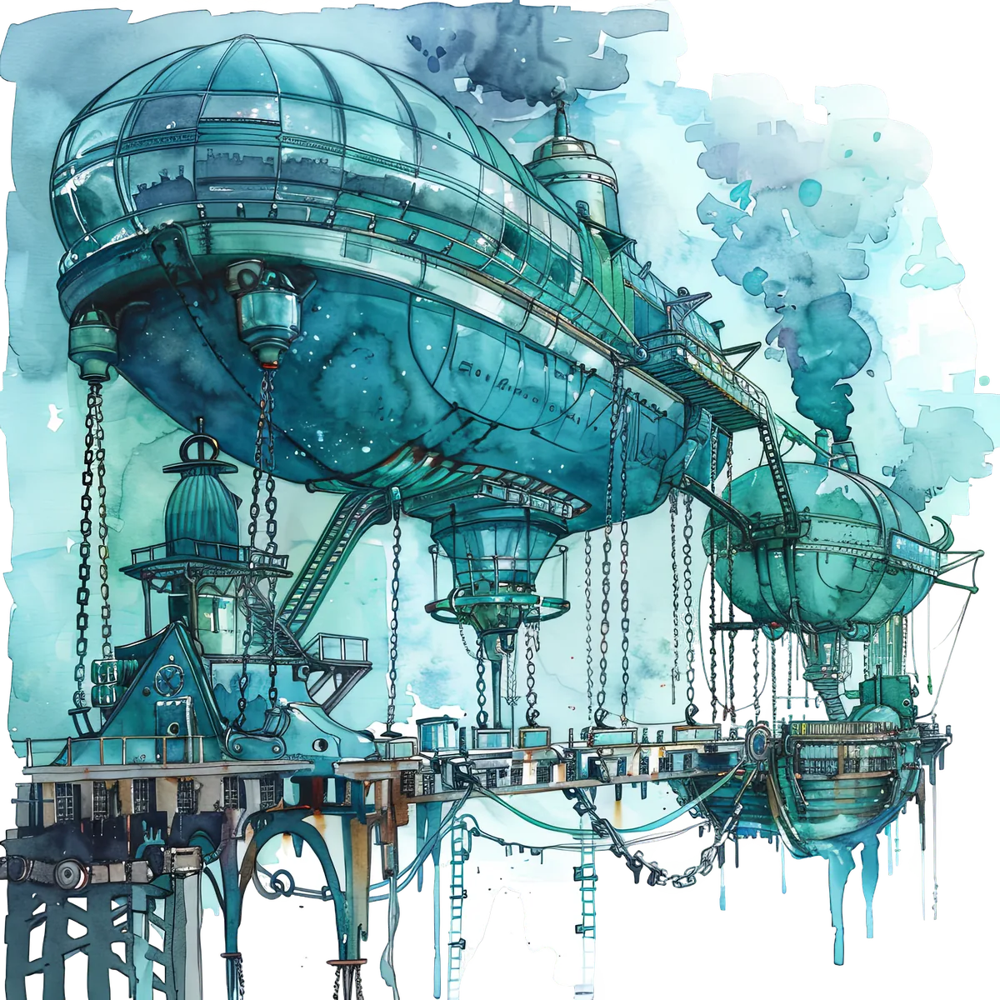

Business Studies
Every great business started as someone's idea.
STAGE 6 PRELIMINARY
Year 11
Your start-up year
Nature of Business, Business Planning and Business Management. Lessons, slides, worksheets and revision.
Open Year 11
STAGE 6 HSC 2027
Year 12
Your HSC year
Operations, Marketing, Finance and Human Resources. Lessons, flashcards, videos and HSC tools.
Open Year 12The study shelf
for Year 11 and Year 12
 Business Verb LabWhat each exam verb wants, plus a question decoder
Business Verb LabWhat each exam verb wants, plus a question decoder Question Sparks24 quick practice questions with a tick-off tracker
Question Sparks24 quick practice questions with a tick-off tracker Year 11 Revision ProgramWeek by week, all three topics
Year 11 Revision ProgramWeek by week, all three topics Student of the WeekWho earned it this Friday?
Student of the WeekWho earned it this Friday? Faith and StudyScripture and encouragement for busy weeks
Faith and StudyScripture and encouragement for busy weeks